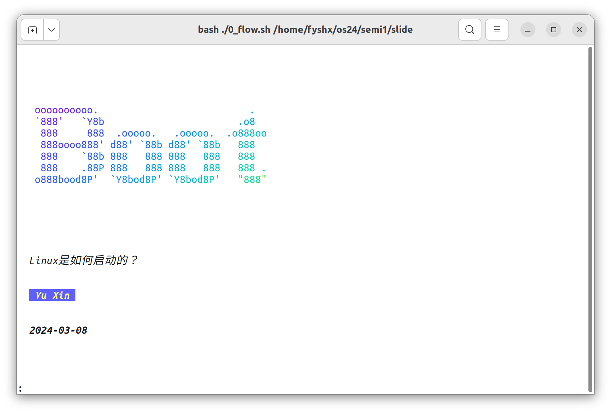
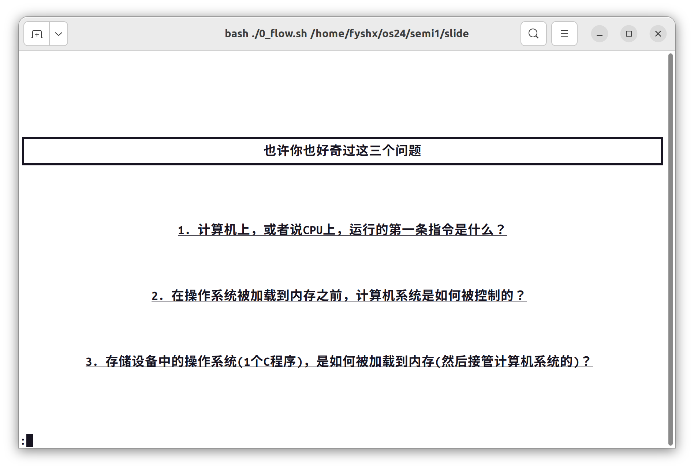
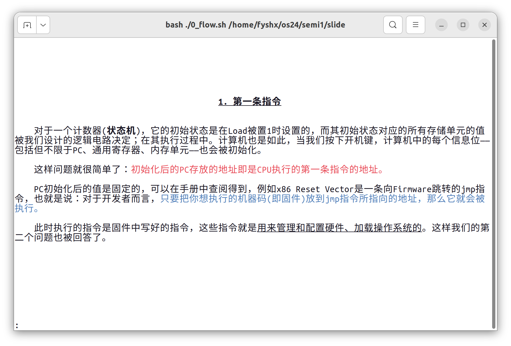
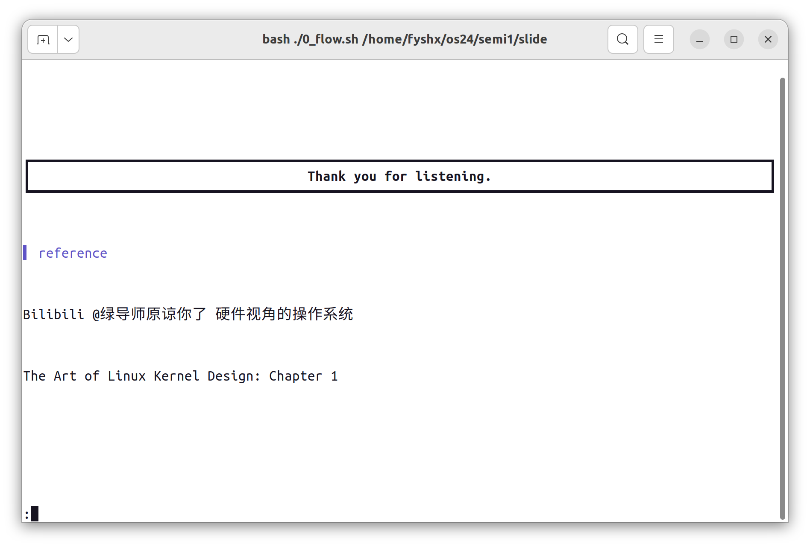
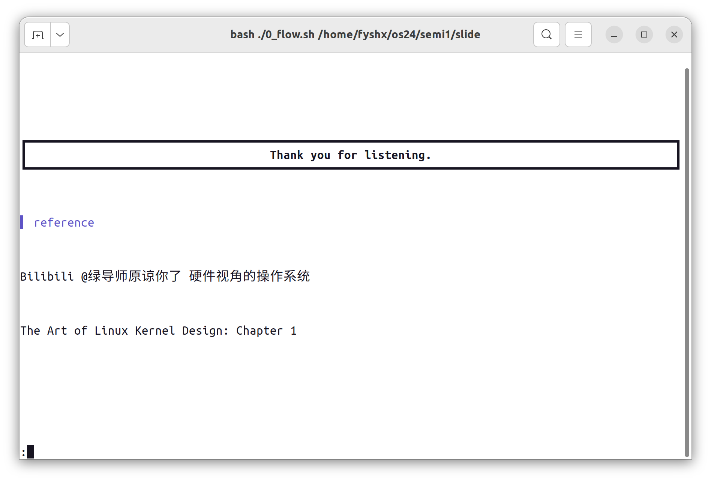
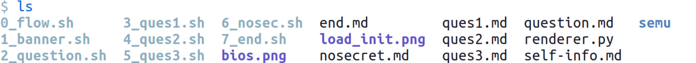
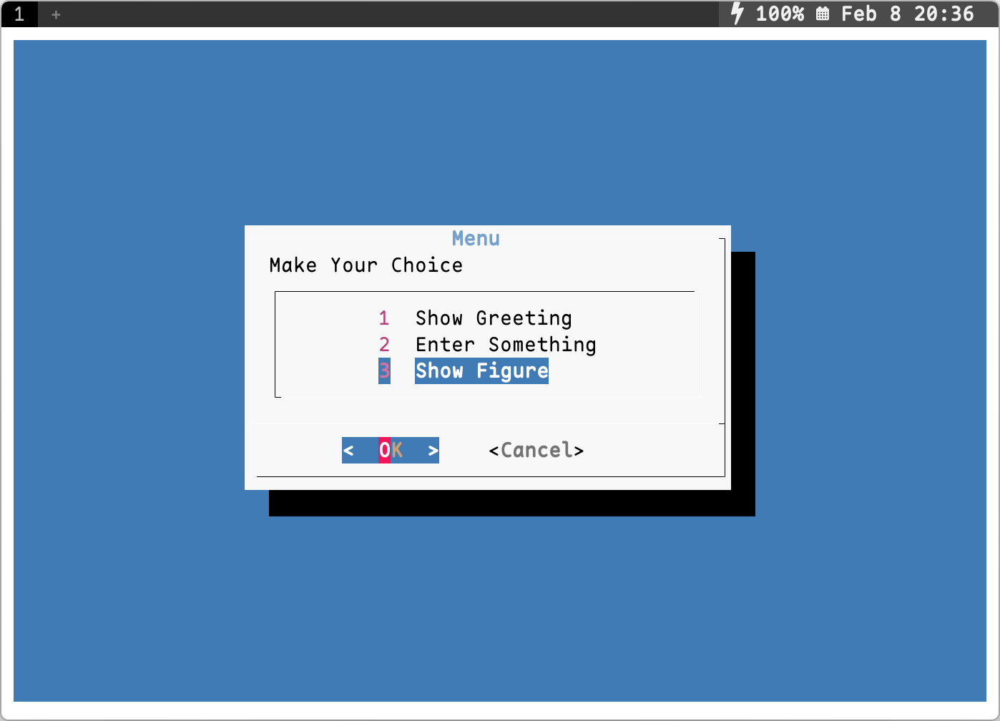

前言
灵感来自蒋炎岩老师的一次讲座：[算法竞赛入门] 为什么要逼大家用 NOILinux？，有参考，但不完全一样.
掌握此技能，你将可以——在终端展示幻灯片，实用性一般，但是可以玩一玩 ·^v^·
效果展示
  

 

具体实现
整体框架
目录
.sh 为展示一张幻灯片的 bash 脚本，.md 为需要渲染的 Markdown，.png 为待展示的图片.
启动器
首先打印封面（本质上是在终端输出一页渲染过的文本），然后通过 read 读入文本，控制幻灯片的行为，如换页、图片展示、退出等.
0_flow.sh：
#!/bin/bash
bash ./1_banner.sh ## 打印封面
pc=1 # counter
while true
do
read -p ":" choice ## 读取文本，控制翻页、图片展示、退出等
if [ "$choice" == "p" ]; then # previous page
((pc--))
bash ./${pc}*
elif [ "$choice" == "g" ]; then # show initial of a state machine
xdg-open ./load_init.png
elif [[ $choice =~ ^[1-7]$ ]]; then # jump
pc=$choice
bash ./${pc}*
elif [ "$choice" == "E" ]; then # exit the script
break
else # default: next page
((pc++))
bash ./${pc}*
fi
done
单页展示
单页展示，说到底，就是展示出一页的文本，基本步骤如下：
- 通过
clear清空上一页的内容； - 计算渲染后的文本的总行数；
- 为了将内容居于竖直方向的中心，计算上下的空行 padding 数量；
- 先打印上部的 padding，再渲染并打印内容文本，最后打印下部的 padding.
比如：（2_question.sh）
clear
length=`python3 renderer.py question.md | wc -l`
total=`tput lines`
sus=$((($total-$length)/2))
for ((i=1; i<=$sus; i++))
do
echo
done
python3 renderer.py question.md
for ((i=1; i<$sus; i++))
do
echo
done
图片展示与外部程序调用

通过 read 接收输入，当输入为指定字符时，通过 xdg-open 打开特定图片，展示完毕后通过 ESC 键关闭即可.
read -p ":" choice
if [ "$choice" == "g" ]; then
xdg-open ./picture.png
fi
类似地，将 xdg-open ... 改成其他命令，可以播放音视频，执行各种程序.
文本渲染
适用于封面页的 ASCII Art
使用 figlet 展现主题词，并使用 lolcat 改色. 除了 figlet 下载时自带的字体样式之外，还可以在Github 上的 figlet-fonts 项目找到并下载更多的字体样式. 上面的展示的"Boot"对应的命令是 figlet " Boot" -f roman | lolcat -S 30. （另外可选的同类命令行工具为 toilet）
ESC 转义
printf 命令，通过 \033 转义可以在终端输出更花哨的文字，可以做简单的效果，如彩色、加粗、斜体等，可以多个效果叠加使用，如下图中最后一行对应的命令是printf "\033[2;34;01;21;09myour text\033[0m\n".（此条同样适用于其他编程语言的输出，033 是 ESC 的八进制 ASCII 编码. 呈现的具体颜色和终端的配色方案有关.）

Markdown 渲染
- glow:
glow是命令行工具，用法为glow foo.md. - rich: rich 是一个可以用来渲染 Markdown 的 python 库.
其他有趣的命令行工具
-
asciiquarium
ASCII Art 水族馆，非常漂亮，我的头像的 ASCII 鱼就是从这里挖来的，在下图的从左往右数第三个海草上方：

-
oneko
呼出一只小猫，非常可爱：

-
cowsay

-
dialog
可交互的 TUI 对话框，这个用来做单页的幻灯片呈现也是非常合适的，比如：
#!/bin/bash choice=$(dialog --clear --title "Menu" --menu "Make Your Choice" 10 40 3 \ 1 "Show Greeting" 2 "Enter Something" 3 "Show Figure" 2>&1 >/dev/tty) case $choice in 3) xdg-open ./figure_1.png ;; # SNIP # esac